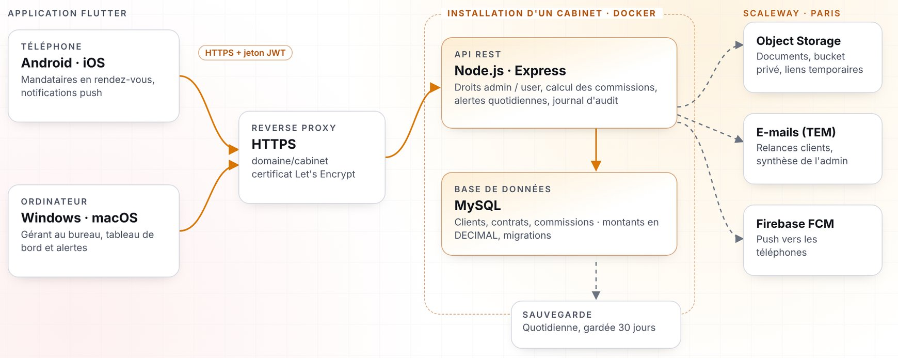
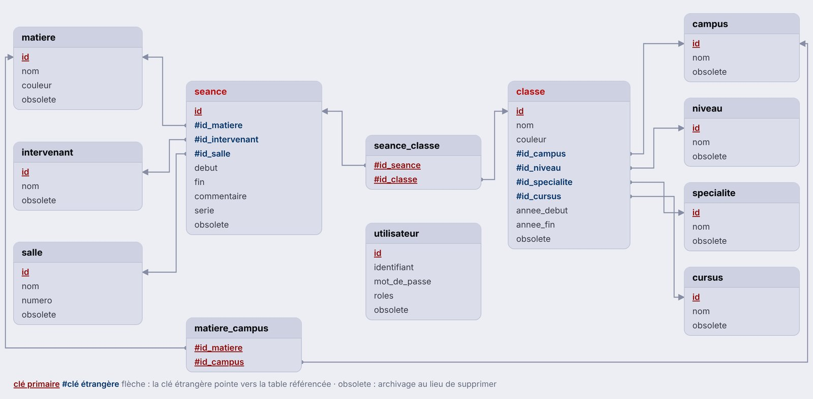

Support et mise à disposition de services informatiques
Dorian Pachot · IRIS MediaSchool Rouen

Deux années de BTS, un stage, un projet en cours
Avant le BTS : handball en National 1, puis la restauration, le management et le paysagisme.
Chaque compétence du bloc 1 est couverte
| Réalisation | 01 Patrimoine | 02 Incidents | 03 Présence en ligne | 04 Mode projet | 05 Mise à disposition | 06 Dév. pro |
|---|---|---|---|---|---|---|
| Gestion de cabinetprojet en cours | ● | ● | ● | |||
| SYNCROstage chez Suitime | ● | ● | ● | ● | ● | |
| Pla'Netprojet à cinq | ● | ● | ● | |||
| CRP-Assurancesite client | ● | ● | ● | |||
| TP Linux avancéTP0 à TP5 | ● | ● | ● | |||
| AD et répartition de chargeWindows Server, Scaleway | ● | ● | ||||
| Parc informatiqueGLPI, ITIL | ● | ● | ||||
| Audit SEOdeux sites | ● | |||||
| Veille et portfolio | ● |
Une application de gestion pour les cabinets de courtage en assurance
Projet de deuxième année · conception terminée, développement en cours
Le problème : tout est dispersé
Informations disperséesSites des compagnies, fichiers Excel, e-mails
Commissions difficiles à suivreCe qui est dû, ce qui est perçu, ce qui manque
Suivi manuel des dossiersUn site par compagnie pour savoir où en est un contrat
Relances non automatiséesPièces manquantes et échéances : de mémoire
Aucune vue d'ensemblePas de tableau de bord pour le gérant
Comment permettre à un cabinet et à ses mandataires de suivre leurs clients, leurs contrats et leurs commissions depuis un outil unique ?
Deux rôles, dix fonctionnalités
Paramètre le cabinet, crée les comptes, voit tous les clients et contrats, saisit les commissions reçues.
Gère ses propres clients et contrats, ajoute des documents, suit ses commissions et ses alertes.
Une installation isolée par cabinet

Chaque choix est justifié dans le cahier technique
| Besoin | Choix | Pourquoi |
|---|---|---|
| Application | Flutter (Dart) | Une seule base de code pour 4 plateformes, déjà utilisée sur SYNCRO |
| Serveur (API) | Node.js et Express | Maîtrisé, minimaliste, le plus documenté |
| Base de données | MySQL dans Docker | Données très liées : les clés étrangères gardent la cohérence |
| Documents | Scaleway Object Storage | Payé à l'usage : le volume est impossible à prévoir |
| E-mails | Scaleway Transactional Email | Envoyés depuis le domaine de l'application |
| Notifications | Firebase + notifications locales | Push sur téléphone, alertes sur ordinateur |
| Hébergement | Scaleway, région Paris | Données en France, un seul fournisseur |
La sécurité est sur le serveur, pas dans l'application
Contrôlé à chaque requête : l'application peut être copiée ou imitée, donc tout contrôle fait seulement chez elle peut être contourné.
Et aussi
Héberger, déployer, sauvegarder
- Scaleway, région Paris
- Une installation par cabinet
- Données jamais mélangées
- Docker Compose : un cabinet = une copie
- Même version pour tous
- Migrations au démarrage
- Une sauvegarde par jour
- Gardée 30 jours
- Restauration testée
La conception est faite, le développement commence
SYNCRO, de la maquette aux deux stores
Application mobile de planning d'équipe : chaque membre saisit ses disponibilités, le responsable valide puis verrouille la semaine. J'ai fait tout le projet : l'application Flutter, l'API Next.js en TypeScript, la base MySQL, le serveur et la publication.


La base d'abord, le code ensuite

Ma veille a un cap : devenir DevOps
Des sourcesAlertes Google, notes de version, règles des stores
Un triProjet, cours ou métier visé ? Sinon, je ne garde pas
Une lecture critiqueSource, date, deuxième source
Une traceRésumée sur le portfolio
Annoncées le 20, corrigées le 21. Trois de mes projets tournent sur PHP.
Vos questions
À montrer en direct : SYNCRO sur les stores · Pla'Net · crp-assurance.com · le portfolio